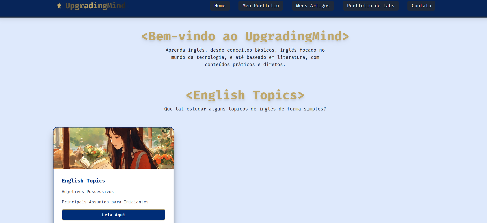
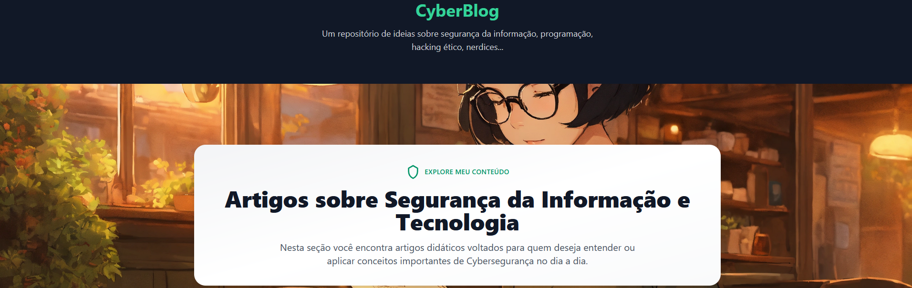
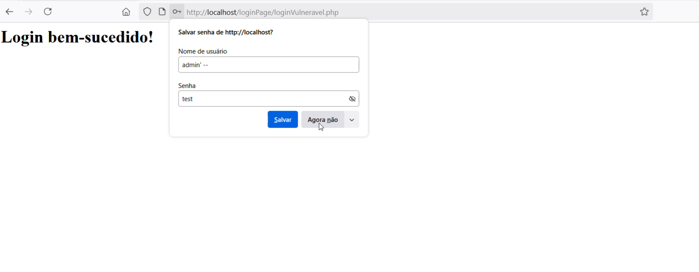

Projetos
Portfolio de Labs
Projeto pessoal para compartilhar labs resolvidos por mim.
- Labs organizados e explicados
- Visualização e interação intuitiva
Page →
Ebooks
Projeto pessoal para compartilhar meus ebooks.
- Ebooks escritos por mim
- Visualmente simples e interativo
Page →
Upgrading Mind
Projeto educativo e didático para compartilhar conteúdo e ensinar inglês
- Conteúdos didáticos preparados por mim
Page →
Cyber Blog
Projeto pessoal para compartilhar meus artigos.
- Artigos escritos por mim
- Visualmente simples e interativo
Page →
Relógio Rotina
Projeto front-end para ajudar na organização das tarefas diárias com base em cores.
- Relógio e tabela de atividades
- Mini player do youtube para ouvir enquanto estuda
- Visualmente simples
Painel de Monitoramento
Projeto para monitoramento de serviços do sistema.
- Monitoramento sem precisar enviar comandos
- Visualmente simples
Gerador de Senhas Seguras
Aplicação full stack com Flask + Tailwind para gerar senhas seguras. Acompanhada de um e-book educativo sobre segurança digital e boas práticas.
- Customização de complexidade da senha
- Design minimalista e acessível
- Texto educacional sobre riscos reais
Linux Distros
Projeto de paginas informativas sobre distribuições Linux, com foco em educação e acessibilidade.
- Texto educacional sobre distros
- Design minimalista e acessível
Page →
Banco de Dados RPG

Projeto didático para aprender SQL com tema de RPG. Criação de tabelas como Aventureiro, Guilda e Classe para simular relacionamentos reais e práticas de modelagem.
- Ideal para iniciantes em SQL
- Mesmo conceito de aplicações reais
- Expansível para consultas complexas
SSH Panel
Projeto backend que permite conexão SSH a máquinas Linux para demonstrar automações e comandos remotos. Ideal para labs, aulas e simulações.
- Conecta a diferentes distros via VirtualBox
- Organizado para escalabilidade
Criptografia
Projeto de criptografia, desenvolvido para fins de estudo e demonstração de conceitos básicos de cifragem/decifragem.
- Criptografia personalizavel
- Design minimalista e acessível
Login Page Vulneravel
Uma página de Login que é intencionalemente vulnerável a SQL Injection, com a versão corrigida do código, apenas para demonstração de vulneravilidade e fins didáticos.
- Correção de vulnerabilidade de forma prática
- Demonstração de vulnerabilidade
Passive Recon Script
Script em Bash que permite a coleta de informações sobre um endereço IP ou domínio fornecido pelo usuário.
- Serve como um "acelerador" de ferramentas de recon.
- O script executa uma série de comandos de rede para obter dados relevantes e salva os resultados em arquivos separados.